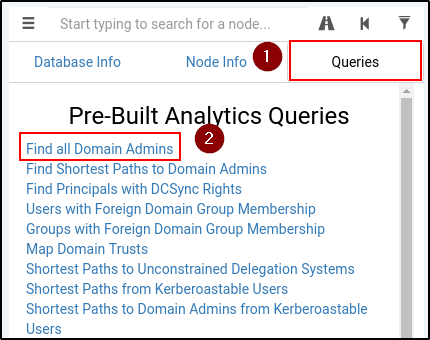

Enumerating Domain data with Bloodhound
Now that we have our Bloodhound data, we need to import it:
We can see more info about the Graph imported,
and use some queries to know more about:
Let's use as an example, the "Find All Domain Admins":

We can try for the shortest path to be admin:
As an example, we can use token impersonation
Or for Kerberoasting attack: